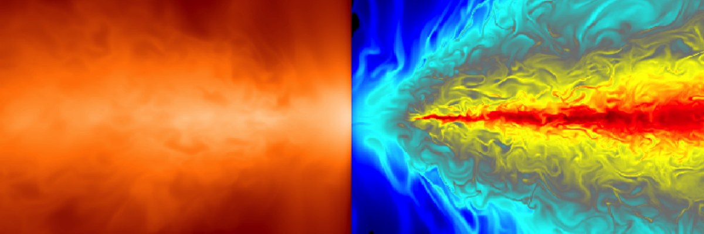

The research of our group is primarily focused on developing and applying computational tools to astrophysical systems. We specialize in developing methods for solving radiation transfer and radiation magnetohydrodynamics, and in post-processing simulations to produce spectra and images that can be compared directly with observations. Current research includes simulations of tidal disruption events, black hole X-ray binaries, supermassive black hole binaries, and accretion disks in active galactic nuclei, as well as accretion disk winds, interactions between accretion disks and the stars and black holes embedded in them, photospheric radius expansion X-ray bursts on neutron stars, Lyman alpha radiation transfer in exoplanet atmospheres, and cosmic ray and radiation driven winds in star-forming environments. See our research page for more details.